Extracting and visualizing tidy draws from brms models
Matthew Kay
2020-01-26
Source:vignettes/tidy-brms.Rmd
tidy-brms.RmdIntroduction
This vignette describes how to use the tidybayes package to extract tidy data frames of draws from posterior distributions of model variables, fits, and predictions from brms::brm. For a more general introduction to tidybayes and its use on general-purpose Bayesian modeling languages (like Stan and JAGS), see vignette(“tidybayes”).
Setup
The following libraries are required to run this vignette:
library(magrittr)
library(dplyr)
library(purrr)
library(forcats)
library(tidyr)
library(modelr)
library(tidybayes)
library(ggplot2)
library(ggstance)
library(cowplot)
library(rstan)
library(brms)
library(ggrepel)
library(RColorBrewer)
library(gganimate)
theme_set(theme_tidybayes() + panel_border())These options help Stan run faster:
Example dataset
To demonstrate tidybayes, we will use a simple dataset with 10 observations from 5 conditions each:
set.seed(5)
n = 10
n_condition = 5
ABC =
tibble(
condition = rep(c("A","B","C","D","E"), n),
response = rnorm(n * 5, c(0,1,2,1,-1), 0.5)
)A snapshot of the data looks like this:
## # A tibble: 10 x 2
## condition response
## <chr> <dbl>
## 1 A -0.420
## 2 B 1.69
## 3 C 1.37
## 4 D 1.04
## 5 E -0.144
## 6 A -0.301
## 7 B 0.764
## 8 C 1.68
## 9 D 0.857
## 10 E -0.931This is a typical tidy format data frame: one observation per row. Graphically:
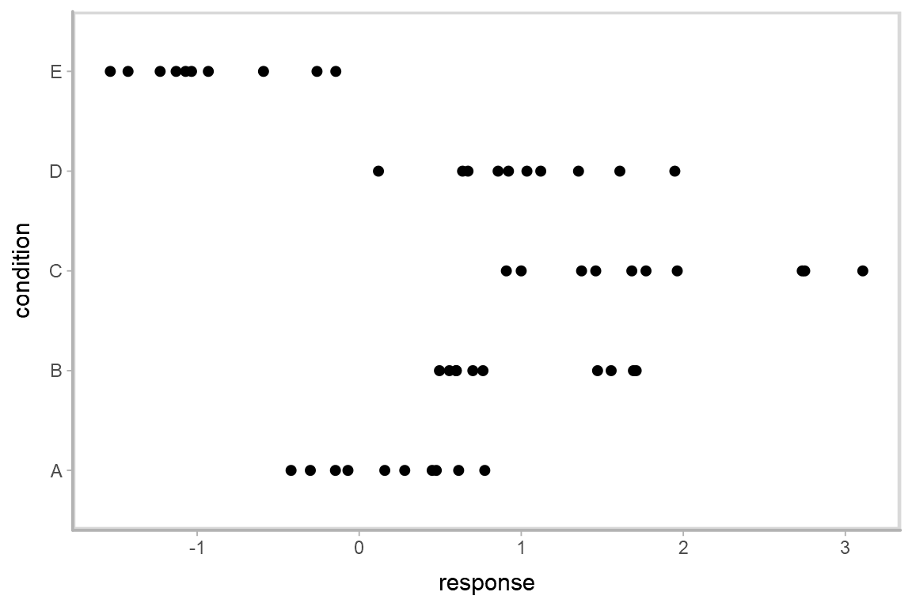
Model
Let’s fit a hierarchical model with shrinkage towards a global mean:
m = brm(response ~ (1|condition), data = ABC, control = list(adapt_delta = .99),
prior = c(
prior(normal(0, 1), class = Intercept),
prior(student_t(3, 0, 1), class = sd),
prior(student_t(3, 0, 1), class = sigma)
))## Compiling the C++ model## Start samplingThe results look like this:
## Family: gaussian
## Links: mu = identity; sigma = identity
## Formula: response ~ (1 | condition)
## Data: ABC (Number of observations: 50)
## Samples: 4 chains, each with iter = 2000; warmup = 1000; thin = 1;
## total post-warmup samples = 4000
##
## Group-Level Effects:
## ~condition (Number of levels: 5)
## Estimate Est.Error l-95% CI u-95% CI Rhat Bulk_ESS Tail_ESS
## sd(Intercept) 1.19 0.45 0.62 2.39 1.01 983 1152
##
## Population-Level Effects:
## Estimate Est.Error l-95% CI u-95% CI Rhat Bulk_ESS Tail_ESS
## Intercept 0.50 0.47 -0.50 1.44 1.01 887 1073
##
## Family Specific Parameters:
## Estimate Est.Error l-95% CI u-95% CI Rhat Bulk_ESS Tail_ESS
## sigma 0.56 0.06 0.47 0.70 1.00 1738 2142
##
## Samples were drawn using sampling(NUTS). For each parameter, Bulk_ESS
## and Tail_ESS are effective sample size measures, and Rhat is the potential
## scale reduction factor on split chains (at convergence, Rhat = 1).
Extracting draws from a fit in tidy-format using spread_draws
Now that we have our results, the fun begins: getting the draws out in a tidy format! First, we’ll use the get_variables function to get a list of raw model variable names so that we know what variables we can extract from the model:
## [1] "b_Intercept" "sd_condition__Intercept" "sigma" "Intercept"
## [5] "r_condition[A,Intercept]" "r_condition[B,Intercept]" "r_condition[C,Intercept]" "r_condition[D,Intercept]"
## [9] "r_condition[E,Intercept]" "lp__" "z_1[1,1]" "z_1[1,2]"
## [13] "z_1[1,3]" "z_1[1,4]" "z_1[1,5]" "accept_stat__"
## [17] "stepsize__" "treedepth__" "n_leapfrog__" "divergent__"
## [21] "energy__"Here, b_Intercept is the global mean, and the r_condition[] variables are offsets from that mean for each condition. Given these variables:
r_condition[A,Intercept]r_condition[B,Intercept]r_condition[C,Intercept]r_condition[D,Intercept]r_condition[E,Intercept]
We might want a data frame where each row is a draw from either r_condition[A,Intercept], r_condition[B,Intercept], ...[C,...], ...[D,...], or ...[E,...], and where we have columns indexing which chain/iteration/draw the row came from and which condition (A to E) it is for. That would allow us to easily compute quantities grouped by condition, or generate plots by condition using ggplot, or even merge draws with the original data to plot data and posteriors simultaneously.
The workhorse of tidybayes is the spread_draws function, which does this extraction for us. It includes a simple specification format that we can use to extract variables and their indices into tidy-format data frames.
Gathering variable indices into a separate column in a tidy format data frame
Given a variable in the model like this:
r_condition[D,Intercept]
We can provide spread_draws with a column specification like this:
r_condition[condition,term]
Where condition corresponds to D and term corresponds to Intercept. There is nothing too magical about what spread_draws does with this specification: under the hood, it splits the variable indices by commas and spaces (you can split by other characters by changing the sep argument). It lets you assign columns to the resulting indices in order. So r_condition[D,Intercept] has indices D and Intercept, and spread_draws lets us extract these indices as columns in the resulting tidy data frame of draws from r_condition:
## # A tibble: 10 x 6
## # Groups: condition, term [1]
## condition term r_condition .chain .iteration .draw
## <chr> <chr> <dbl> <int> <int> <int>
## 1 A Intercept -0.716 1 1 1
## 2 A Intercept -0.481 1 2 2
## 3 A Intercept -0.931 1 3 3
## 4 A Intercept -0.661 1 4 4
## 5 A Intercept 0.415 1 5 5
## 6 A Intercept -0.0208 1 6 6
## 7 A Intercept -0.276 1 7 7
## 8 A Intercept 0.377 1 8 8
## 9 A Intercept 0.113 1 9 9
## 10 A Intercept 0.948 1 10 10We can choose whatever names we want for the index columns; e.g.:
## # A tibble: 10 x 6
## # Groups: c, t [1]
## c t r_condition .chain .iteration .draw
## <chr> <chr> <dbl> <int> <int> <int>
## 1 A Intercept -0.716 1 1 1
## 2 A Intercept -0.481 1 2 2
## 3 A Intercept -0.931 1 3 3
## 4 A Intercept -0.661 1 4 4
## 5 A Intercept 0.415 1 5 5
## 6 A Intercept -0.0208 1 6 6
## 7 A Intercept -0.276 1 7 7
## 8 A Intercept 0.377 1 8 8
## 9 A Intercept 0.113 1 9 9
## 10 A Intercept 0.948 1 10 10But the more descriptive and less cryptic names from the previous example are probably preferable.
In this particular model, there is only one term (Intercept), thus we could omit that index altogether to just get each condition and the value of r_condition for that condition:
## # A tibble: 10 x 5
## # Groups: condition [1]
## condition r_condition .chain .iteration .draw
## <chr> <dbl> <int> <int> <int>
## 1 A -0.716 1 1 1
## 2 A -0.481 1 2 2
## 3 A -0.931 1 3 3
## 4 A -0.661 1 4 4
## 5 A 0.415 1 5 5
## 6 A -0.0208 1 6 6
## 7 A -0.276 1 7 7
## 8 A 0.377 1 8 8
## 9 A 0.113 1 9 9
## 10 A 0.948 1 10 10Note: If you have used spread_draws with a raw sample from Stan or JAGS, you may be used to using recover_types before spread_draws to get index column values back (e.g. if the index was a factor). This is not necessary when using spread_draws on rstanarm models, because those models already contain that information in their variable names. For more on recover_types, see vignette(“tidybayes”).
Point summaries and intervals
With simple model variables
tidybayes provides a family of functions for generating point summaries and intervals from draws in a tidy format. These functions follow the naming scheme [median|mean|mode]_[qi|hdi], for example, median_qi, mean_qi, mode_hdi, and so on. The first name (before the _) indicates the type of point summary, and the second name indicates the type of interval. qi yields a quantile interval (a.k.a. equi-tailed interval, central interval, or percentile interval) and hdi yields a highest (posterior) density interval. Custom point summary or interval functions can also be applied using the point_interval function.
For example, we might extract the draws corresponding to posterior distributions of the overall mean and standard deviation of observations:
## # A tibble: 10 x 5
## .chain .iteration .draw b_Intercept sigma
## <int> <int> <int> <dbl> <dbl>
## 1 1 1 1 0.795 0.533
## 2 1 2 2 0.850 0.601
## 3 1 3 3 0.830 0.602
## 4 1 4 4 0.960 0.546
## 5 1 5 5 -0.0587 0.516
## 6 1 6 6 0.160 0.475
## 7 1 7 7 0.692 0.608
## 8 1 8 8 -0.101 0.522
## 9 1 9 9 0.0570 0.480
## 10 1 10 10 -0.668 0.574Like with r_condition[condition,term], this gives us a tidy data frame. If we want the median and 95% quantile interval of the variables, we can apply median_qi:
## # A tibble: 1 x 9
## b_Intercept b_Intercept.lower b_Intercept.upper sigma sigma.lower sigma.upper .width .point .interval
## <dbl> <dbl> <dbl> <dbl> <dbl> <dbl> <dbl> <chr> <chr>
## 1 0.517 -0.496 1.44 0.557 0.465 0.696 0.95 median qiWe can specify the columns we want to get medians and intervals from, as above, or if we omit the list of columns, median_qi will use every column that is not a grouping column or a special column (like .chain, .iteration, or .draw). Thus in the above example, b_Intercept and sigma are redundant arguments to median_qi because they are also the only columns we gathered from the model. So we can simplify this to:
## # A tibble: 1 x 9
## b_Intercept b_Intercept.lower b_Intercept.upper sigma sigma.lower sigma.upper .width .point .interval
## <dbl> <dbl> <dbl> <dbl> <dbl> <dbl> <dbl> <chr> <chr>
## 1 0.517 -0.496 1.44 0.557 0.465 0.696 0.95 median qiIf you would rather have a long-format list of intervals, use gather_draws instead:
## # A tibble: 2 x 7
## .variable .value .lower .upper .width .point .interval
## <chr> <dbl> <dbl> <dbl> <dbl> <chr> <chr>
## 1 b_Intercept 0.517 -0.496 1.44 0.95 median qi
## 2 sigma 0.557 0.465 0.696 0.95 median qiFor more on gather_draws, see vignette(“tidybayes”).
With indexed model variables
When we have a model variable with one or more indices, such as r_condition, we can apply median_qi (or other functions in the point_interval family) as we did before:
## # A tibble: 5 x 7
## condition r_condition .lower .upper .width .point .interval
## <chr> <dbl> <dbl> <dbl> <dbl> <chr> <chr>
## 1 A -0.315 -1.28 0.716 0.95 median qi
## 2 B 0.490 -0.453 1.52 0.95 median qi
## 3 C 1.32 0.336 2.38 0.95 median qi
## 4 D 0.498 -0.427 1.54 0.95 median qi
## 5 E -1.39 -2.39 -0.390 0.95 median qiHow did median_qi know what to aggregate? Data frames returned by spread_draws are automatically grouped by all index variables you pass to it; in this case, that means spread_draws groups its results by condition. median_qi respects those groups, and calculates the point summaries and intervals within all groups. Then, because no columns were passed to median_qi, it acts on the only non-special (.-prefixed) and non-group column, r_condition. So the above shortened syntax is equivalent to this more verbose call:
m %>%
spread_draws(r_condition[condition,]) %>%
group_by(condition) %>% # this line not necessary (done by spread_draws)
median_qi(r_condition) # b is not necessary (it is the only non-group column)## # A tibble: 5 x 7
## condition r_condition .lower .upper .width .point .interval
## <chr> <dbl> <dbl> <dbl> <dbl> <chr> <chr>
## 1 A -0.315 -1.28 0.716 0.95 median qi
## 2 B 0.490 -0.453 1.52 0.95 median qi
## 3 C 1.32 0.336 2.38 0.95 median qi
## 4 D 0.498 -0.427 1.54 0.95 median qi
## 5 E -1.39 -2.39 -0.390 0.95 median qiCombining variables with different indices in a single tidy format data frame
spread_draws and gather_draws support extracting variables that have different indices into the same data frame. Indices with the same name are automatically matched up, and values are duplicated as necessary to produce one row per all combination of levels of all indices. For example, we might want to calculate the mean within each condition (call this condition_mean). In this model, that mean is the intercept (b_Intercept) plus the effect for a given condition (r_condition).
We can gather draws from b_Intercept and r_condition together in a single data frame:
## # A tibble: 10 x 6
## # Groups: condition [5]
## .chain .iteration .draw b_Intercept condition r_condition
## <int> <int> <int> <dbl> <chr> <dbl>
## 1 1 1 1 0.795 A -0.716
## 2 1 1 1 0.795 B -0.128
## 3 1 1 1 0.795 C 0.973
## 4 1 1 1 0.795 D 0.301
## 5 1 1 1 0.795 E -1.75
## 6 1 2 2 0.850 A -0.481
## 7 1 2 2 0.850 B 0.308
## 8 1 2 2 0.850 C 1.11
## 9 1 2 2 0.850 D 0.227
## 10 1 2 2 0.850 E -1.58Within each draw, b_Intercept is repeated as necessary to correspond to every index of r_condition. Thus, the mutate function from dplyr can be used to find their sum, condition_mean (which is the mean for each condition):
m %>%
spread_draws(`b_Intercept`, r_condition[condition,]) %>%
mutate(condition_mean = b_Intercept + r_condition) %>%
median_qi(condition_mean)## # A tibble: 5 x 7
## condition condition_mean .lower .upper .width .point .interval
## <chr> <dbl> <dbl> <dbl> <dbl> <chr> <chr>
## 1 A 0.196 -0.162 0.545 0.95 median qi
## 2 B 1.01 0.651 1.34 0.95 median qi
## 3 C 1.84 1.47 2.19 0.95 median qi
## 4 D 1.02 0.658 1.36 0.95 median qi
## 5 E -0.893 -1.25 -0.541 0.95 median qimedian_qi uses tidy evaluation (see vignette("tidy-evaluation", package = "rlang")), so it can take column expressions, not just column names. Thus, we can simplify the above example by moving the calculation of condition_mean from mutate into median_qi:
m %>%
spread_draws(b_Intercept, r_condition[condition,]) %>%
median_qi(condition_mean = b_Intercept + r_condition)## # A tibble: 5 x 7
## condition condition_mean .lower .upper .width .point .interval
## <chr> <dbl> <dbl> <dbl> <dbl> <chr> <chr>
## 1 A 0.196 -0.162 0.545 0.95 median qi
## 2 B 1.01 0.651 1.34 0.95 median qi
## 3 C 1.84 1.47 2.19 0.95 median qi
## 4 D 1.02 0.658 1.36 0.95 median qi
## 5 E -0.893 -1.25 -0.541 0.95 median qiPlotting point summaries and intervals
Plotting point summaries and with one interval is straightforward using the geom_pointinterval or geom_pointintervalh geoms:
m %>%
spread_draws(b_Intercept, r_condition[condition,]) %>%
median_qi(condition_mean = b_Intercept + r_condition) %>%
ggplot(aes(y = condition, x = condition_mean, xmin = .lower, xmax = .upper)) +
geom_pointintervalh()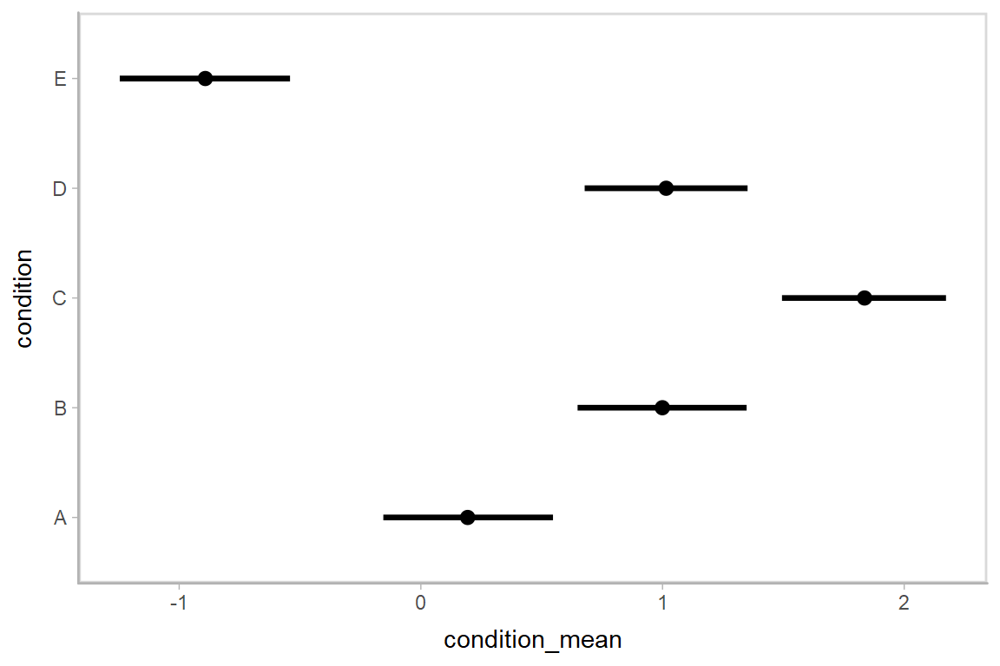
Intervals with multiple probability levels
median_qi and its sister functions can also produce an arbitrary number of probability intervals by setting the .width = argument:
m %>%
spread_draws(b_Intercept, r_condition[condition,]) %>%
median_qi(condition_mean = b_Intercept + r_condition, .width = c(.95, .8, .5))## # A tibble: 15 x 7
## condition condition_mean .lower .upper .width .point .interval
## <chr> <dbl> <dbl> <dbl> <dbl> <chr> <chr>
## 1 A 0.196 -0.162 0.545 0.95 median qi
## 2 B 1.01 0.651 1.34 0.95 median qi
## 3 C 1.84 1.47 2.19 0.95 median qi
## 4 D 1.02 0.658 1.36 0.95 median qi
## 5 E -0.893 -1.25 -0.541 0.95 median qi
## 6 A 0.196 -0.0286 0.420 0.8 median qi
## 7 B 1.01 0.780 1.23 0.8 median qi
## 8 C 1.84 1.61 2.06 0.8 median qi
## 9 D 1.02 0.794 1.24 0.8 median qi
## 10 E -0.893 -1.11 -0.662 0.8 median qi
## 11 A 0.196 0.0765 0.314 0.5 median qi
## 12 B 1.01 0.885 1.12 0.5 median qi
## 13 C 1.84 1.72 1.96 0.5 median qi
## 14 D 1.02 0.901 1.13 0.5 median qi
## 15 E -0.893 -1.01 -0.772 0.5 median qiThe results are in a tidy format: one row per group and uncertainty interval width (.width). This facilitates plotting. For example, assigning -.width to the size aesthetic will show all intervals, making thicker lines correspond to smaller intervals. The geom_pointintervalh geom automatically sets the xmin, xmax, and size aesthetics appropriately based on the .lower, .upper, and .width columns in the data to produce plots of points with multiple probability levels:
m %>%
spread_draws(b_Intercept, r_condition[condition,]) %>%
median_qi(condition_mean = b_Intercept + r_condition, .width = c(.95, .66)) %>%
ggplot(aes(y = condition, x = condition_mean)) +
geom_pointintervalh() 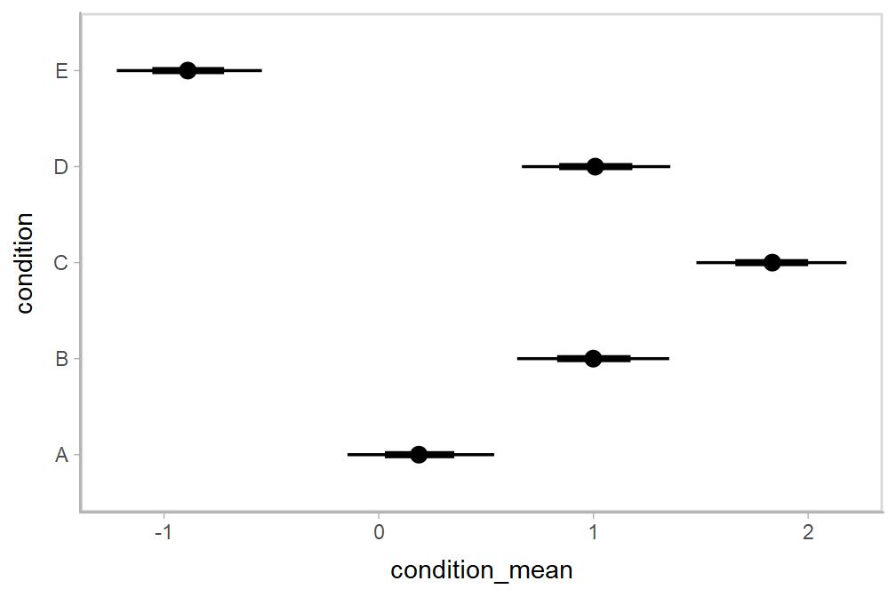
Intervals with densities
To see the density along with the intervals, we can use stat_eyeh (horizontal “eye plots”, which combine intervals with violin plots), or stat_halfeyeh (horizontal interval + density plots):
m %>%
spread_draws(b_Intercept, r_condition[condition,]) %>%
mutate(condition_mean = b_Intercept + r_condition) %>%
ggplot(aes(y = condition, x = condition_mean)) +
stat_halfeyeh()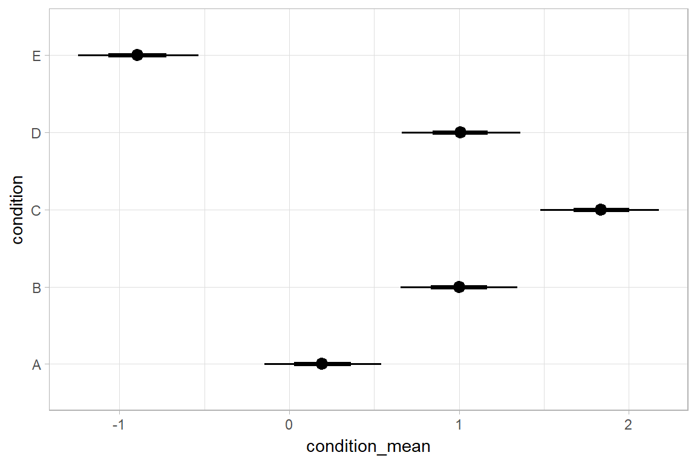
Or say you want to annotate portions of the densities in color; the fill aesthetic can vary within a slab in all geoms and stats in the geom_slabinterval() family, including stat_halfeyeh(). For example, if you want to annotate a domain-specific region of practical equivalence (ROPE), you could do something like this:
m %>%
spread_draws(b_Intercept, r_condition[condition,]) %>%
mutate(condition_mean = b_Intercept + r_condition) %>%
ggplot(aes(y = condition, x = condition_mean, fill = stat(abs(x) < .8))) +
stat_halfeyeh() +
geom_vline(xintercept = c(-.8, .8), linetype = "dashed") +
scale_fill_manual(values = c("gray80", "skyblue"))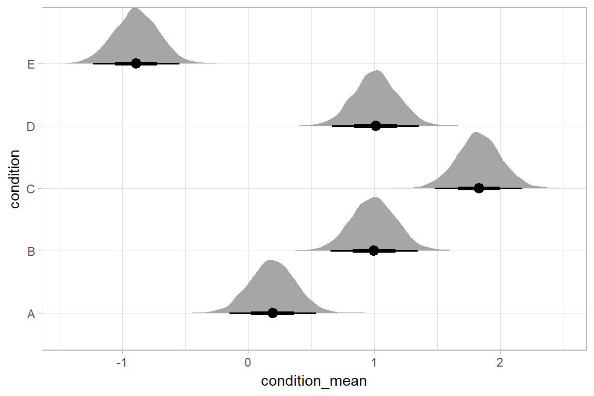
Other visualizations of distributions: stat_slabinterval
There are a variety of additional stats for visualizing distributions in the geom_slabinterval() family of stats and geoms:
The slabinterval family of geoms and stats
See vignette("slabinterval") for an overview.
Posterior fits
Rather than calculating conditional means manually as in the previous example, we could use add_fitted_draws, which is analogous to brms::fitted.brmsfit or brms::posterior_linpred (giving posterior draws from the model’s linear predictor, in this case, posterior distributions of conditional means), but uses a tidy data format. We can combine it with modelr::data_grid to first generate a grid describing the fits we want, then transform that grid into a long-format data frame of draws from posterior fits:
## # A tibble: 10 x 6
## # Groups: condition, .row [1]
## condition .row .chain .iteration .draw .value
## <chr> <int> <int> <int> <int> <dbl>
## 1 A 1 NA NA 1 0.0798
## 2 A 1 NA NA 2 0.369
## 3 A 1 NA NA 3 -0.101
## 4 A 1 NA NA 4 0.299
## 5 A 1 NA NA 5 0.357
## 6 A 1 NA NA 6 0.140
## 7 A 1 NA NA 7 0.415
## 8 A 1 NA NA 8 0.276
## 9 A 1 NA NA 9 0.170
## 10 A 1 NA NA 10 0.280To plot this example, we’ll also show the use of stat_pointintervalh instead of geom_pointintervalh, which summarizes draws into points and intervals within ggplot:
ABC %>%
data_grid(condition) %>%
add_fitted_draws(m) %>%
ggplot(aes(x = .value, y = condition)) +
stat_pointintervalh(.width = c(.66, .95))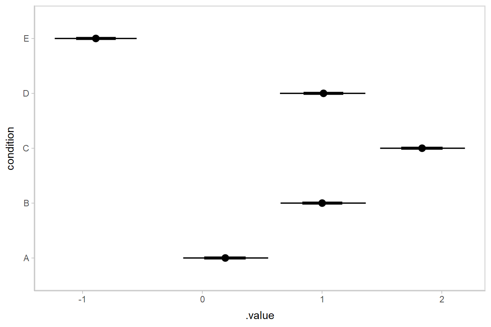
Quantile dotplots
Intervals are nice if the alpha level happens to line up with whatever decision you are trying to make, but getting a shape of the posterior is better (hence eye plots, above). On the other hand, making inferences from density plots is imprecise (estimating the area of one shape as a proportion of another is a hard perceptual task). Reasoning about probability in frequency formats is easier, motivating quantile dotplots (Kay et al. 2016, Fernandes et al. 2018), which also allow precise estimation of arbitrary intervals (down to the dot resolution of the plot, 100 in the example below).
Within the slabinterval family of geoms in tidybayes is the dots and dotsinterval family, which automatically determine appropriate bin sizes for dotplots and can calculate quantiles from samples to construct quantile dotplots. stat_dotsh() is the horizontal variant designed for use on samples:
ABC %>%
data_grid(condition) %>%
add_fitted_draws(m) %>%
ggplot(aes(x = .value, y = condition)) +
stat_dotsh(quantiles = 100)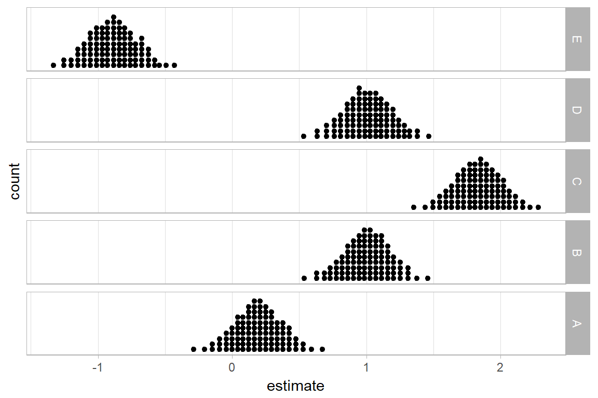
The idea is to get away from thinking about the posterior as indicating one canonical point or interval, but instead to represent it as (say) 100 approximately equally likely points.
Posterior predictions
Where add_fitted_draws is analogous to brms::fitted.brmsfit (or brms::posterior_linpred), add_predicted_draws is analogous to brms::predict.brmsfit (brms::posterior_predict), giving draws from the posterior predictive distribution.
Here is an example of posterior predictive distributions plotted using stat_slabh():
ABC %>%
data_grid(condition) %>%
add_predicted_draws(m) %>%
ggplot(aes(x = .prediction, y = condition)) +
stat_slabh()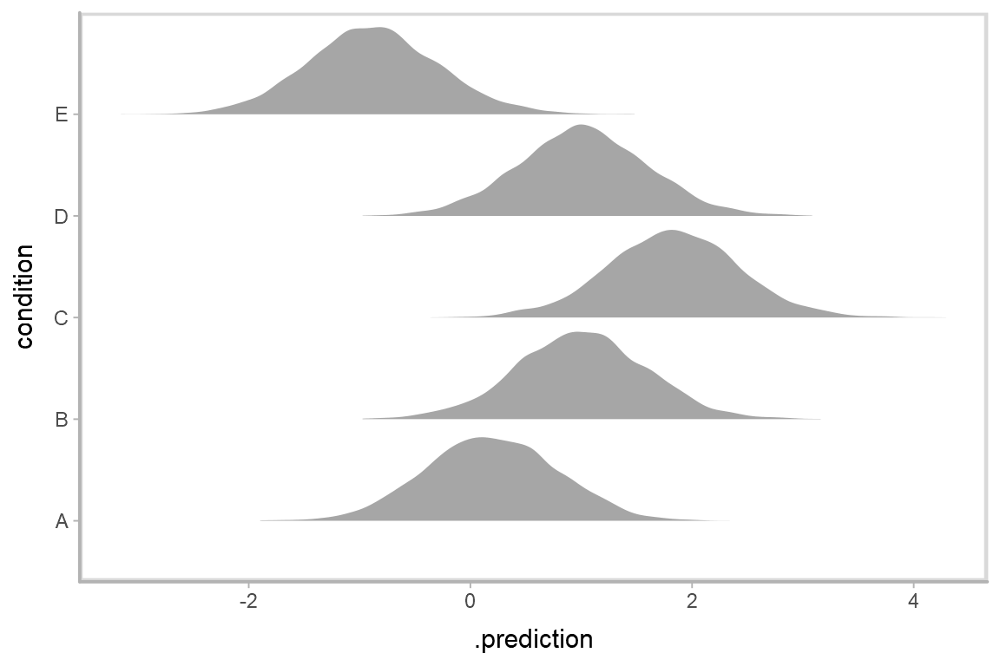
We could also use tidybayes::stat_intervalh to plot predictive bands alongside the data:
ABC %>%
data_grid(condition) %>%
add_predicted_draws(m) %>%
ggplot(aes(y = condition, x = .prediction)) +
stat_intervalh(.width = c(.50, .80, .95, .99)) +
geom_point(aes(x = response), data = ABC) +
scale_color_brewer()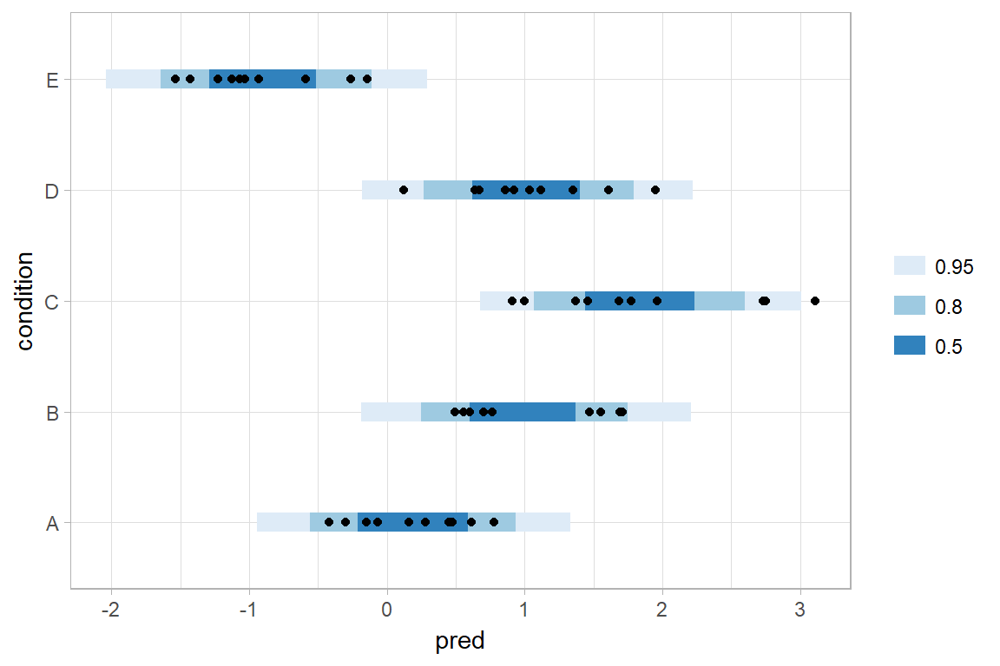
Altogether, data, posterior predictions, and posterior distributions of the means:
grid = ABC %>%
data_grid(condition)
fits = grid %>%
add_fitted_draws(m)
preds = grid %>%
add_predicted_draws(m)
ABC %>%
ggplot(aes(y = condition, x = response)) +
stat_intervalh(aes(x = .prediction), data = preds) +
stat_pointintervalh(aes(x = .value), data = fits, .width = c(.66, .95), position = position_nudge(y = -0.2)) +
geom_point() +
scale_color_brewer()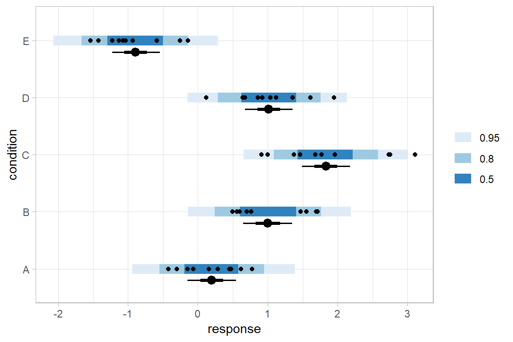
Posterior predictions, Kruschke-style
The above approach to posterior predictions integrates over the parameter uncertainty to give a single posterior predictive distribution. Another approach, often used by John Kruschke in his book Doing Bayesian Data Analysis, is to attempt to show both the predictive uncertainty and the parameter uncertainty simultaneously by showing several possible predictive distributions implied by the posterior.
We can do this pretty easily by asking for the distributional parameters for a given prediction implied by the posterior. We’ll do it explicitly here by setting dpar = c("mu", "sigma") in add_fitted_draws. Rather than specifying the parameters explicitly, you can also just set dpar = TRUE to get draws from all distributional parameters in a model, and this will work for any response distribution supported by brms. Then, we can select a small number of draws using sample_draws() and then use stat_dist_slabh() to visualize each predictive distribution implied by the values of mu and sigma:
ABC %>%
data_grid(condition) %>%
add_fitted_draws(m, dpar = c("mu", "sigma")) %>%
sample_draws(30) %>%
ggplot(aes(y = condition)) +
stat_dist_slabh(aes(dist = "norm", arg1 = mu, arg2 = sigma),
slab_color = "gray65", alpha = 1/10, fill = NA
) +
geom_point(aes(x = response), data = ABC, shape = 21, fill = "#9ECAE1", size = 2)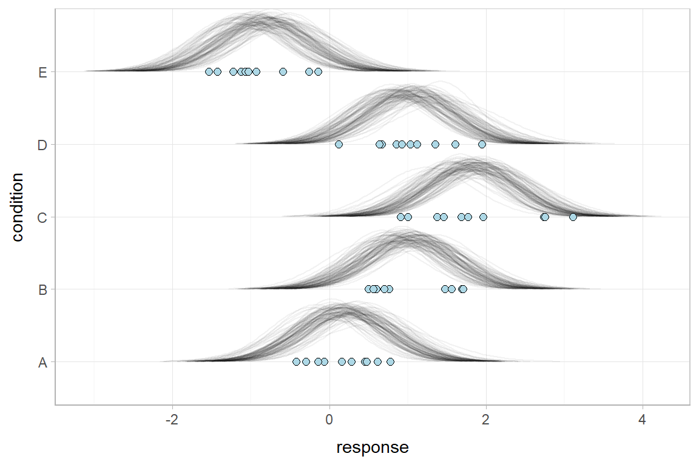
For a more detailed description of these charts (and some useful variations on them), see Solomon Kurz’s excellent blog post on the topic.
We could even combine the Kruschke-style plots of predictive distributions with half-eyes showing the posterior means:
ABC %>%
data_grid(condition) %>%
add_fitted_draws(m, dpar = c("mu", "sigma")) %>%
ggplot(aes(x = condition)) +
stat_dist_slab(aes(dist = "norm", arg1 = mu, arg2 = sigma),
slab_color = "gray65", alpha = 1/10, fill = NA, data = . %>% sample_draws(30), scale = .5
) +
stat_halfeye(aes(y = .value), side = "bottom", scale = .5) +
geom_point(aes(y = response), data = ABC, shape = 21, fill = "#9ECAE1", size = 2, position = position_nudge(x = -.1))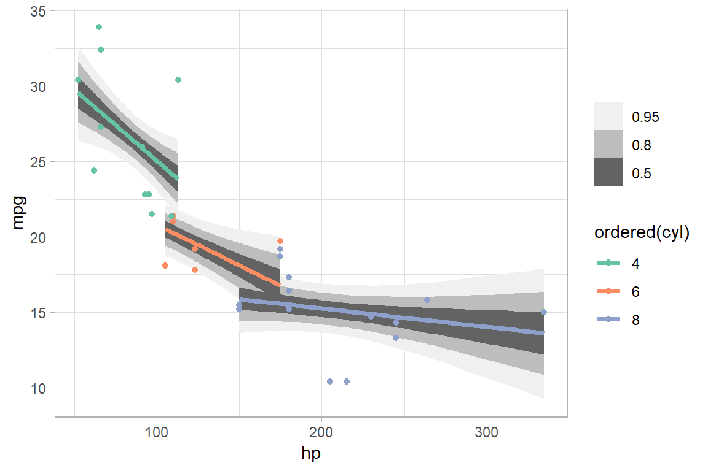
Fit/prediction curves
To demonstrate drawing fit curves with uncertainty, let’s fit a slightly naive model to part of the mtcars dataset:
We can draw fit curves with probability bands:
mtcars %>%
group_by(cyl) %>%
data_grid(hp = seq_range(hp, n = 51)) %>%
add_fitted_draws(m_mpg) %>%
ggplot(aes(x = hp, y = mpg, color = ordered(cyl))) +
stat_lineribbon(aes(y = .value)) +
geom_point(data = mtcars) +
scale_fill_brewer(palette = "Greys") +
scale_color_brewer(palette = "Set2")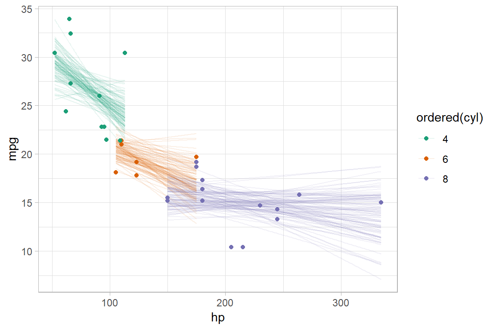
Or we can sample a reasonable number of fit lines (say 100) and overplot them:
mtcars %>%
group_by(cyl) %>%
data_grid(hp = seq_range(hp, n = 101)) %>%
add_fitted_draws(m_mpg, n = 100) %>%
ggplot(aes(x = hp, y = mpg, color = ordered(cyl))) +
geom_line(aes(y = .value, group = paste(cyl, .draw)), alpha = .1) +
geom_point(data = mtcars) +
scale_color_brewer(palette = "Dark2")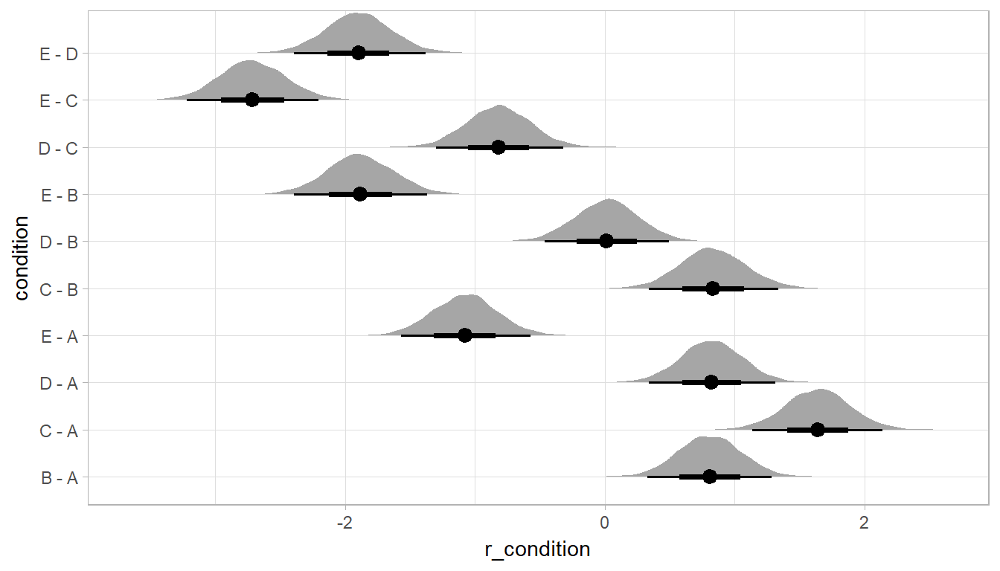
Or we can create animated hypothetical outcome plots (HOPs) of fit lines:
set.seed(123456)
ndraws = 50
p = mtcars %>%
group_by(cyl) %>%
data_grid(hp = seq_range(hp, n = 101)) %>%
add_fitted_draws(m_mpg, n = ndraws) %>%
ggplot(aes(x = hp, y = mpg, color = ordered(cyl))) +
geom_line(aes(y = .value, group = paste(cyl, .draw))) +
geom_point(data = mtcars) +
scale_color_brewer(palette = "Dark2") +
transition_states(.draw, 0, 1) +
shadow_mark(future = TRUE, color = "gray50", alpha = 1/20)
animate(p, nframes = ndraws, fps = 2.5, width = 576, height = 384, res = 96, dev = "png", type = "cairo")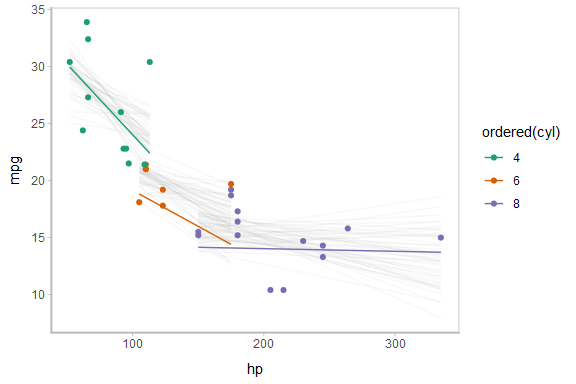
Or, for posterior predictions (instead of fits), we can go back to probability bands:
mtcars %>%
group_by(cyl) %>%
data_grid(hp = seq_range(hp, n = 101)) %>%
add_predicted_draws(m_mpg) %>%
ggplot(aes(x = hp, y = mpg, color = ordered(cyl), fill = ordered(cyl))) +
stat_lineribbon(aes(y = .prediction), .width = c(.95, .80, .50), alpha = 1/4) +
geom_point(data = mtcars) +
scale_fill_brewer(palette = "Set2") +
scale_color_brewer(palette = "Dark2")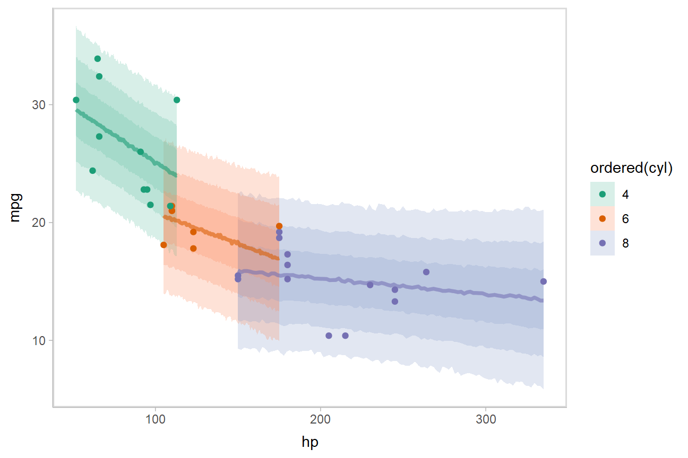
This gets difficult to judge by group, so probably better to facet into multiple plots. Fortunately, since we are using ggplot, that functionality is built in:
mtcars %>%
group_by(cyl) %>%
data_grid(hp = seq_range(hp, n = 101)) %>%
add_predicted_draws(m_mpg) %>%
ggplot(aes(x = hp, y = mpg)) +
stat_lineribbon(aes(y = .prediction), .width = c(.99, .95, .8, .5), color = brewer.pal(5, "Blues")[[5]]) +
geom_point(data = mtcars) +
scale_fill_brewer() +
facet_grid(. ~ cyl, space = "free_x", scales = "free_x")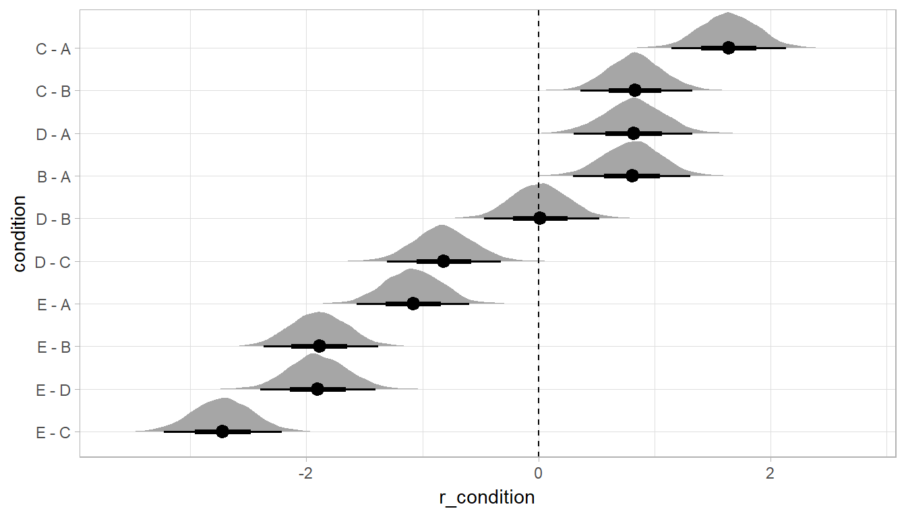
Extracting of distributional regression parameters
brm also allows us to set up submodels for parameters of the response distribution other than the location (e.g., mean). For example, we can allow a variance parameter, such as the standard deviation, to also be some function of the predictors.
This approach can be helpful in cases of non-constant variance (also called heteroskedasticity by folks who like obfuscation via Latin). E.g., imagine two groups, each with different mean response and variance:
set.seed(1234)
AB = tibble(
group = rep(c("a", "b"), each = 20),
response = rnorm(40, mean = rep(c(1, 5), each = 20), sd = rep(c(1, 3), each = 20))
)
AB %>%
ggplot(aes(x = response, y = group)) +
geom_point()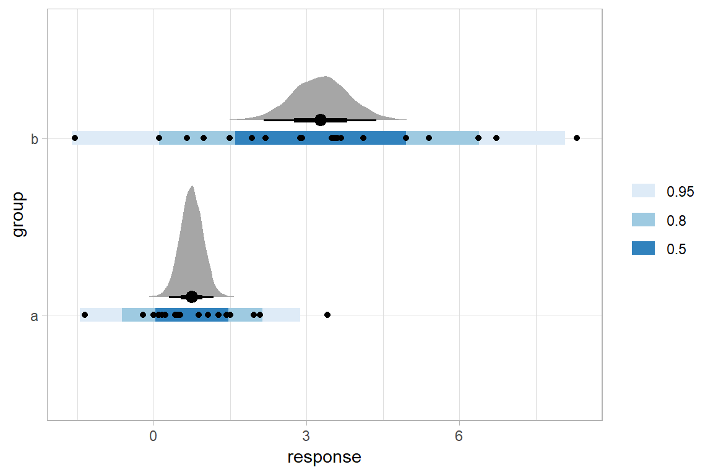
Here is a model that lets the mean and standard deviation of response be dependent on group:
## Compiling the C++ model## Start samplingWe can plot the posterior distribution of the mean response alongside posterior predictive intervals and the data:
grid = AB %>%
data_grid(group)
fits = grid %>%
add_fitted_draws(m_ab)
preds = grid %>%
add_predicted_draws(m_ab)
AB %>%
ggplot(aes(x = response, y = group)) +
stat_halfeyeh(aes(x = .value), relative_scale = 0.7, position = position_nudge(y = 0.1), data = fits) +
stat_intervalh(aes(x = .prediction), data = preds) +
geom_point(data = AB) +
scale_color_brewer()## Warning: Ignoring unknown parameters: relative_scale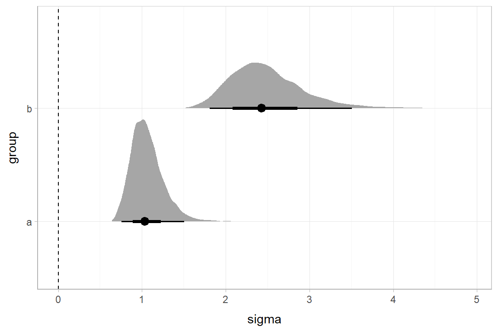
This shows posteriors of the mean of each group (black intervals and the density plots) and posterior predictive intervals (blue).
The predictive intervals in group b are larger than in group a because the model fits a different standard deviation for each group. We can see how the corresponding distributional parameter, sigma, changes by extracting it using the dpar argument to add_fitted_draws:
grid %>%
add_fitted_draws(m_ab, dpar = TRUE) %>%
ggplot(aes(x = sigma, y = group)) +
stat_halfeyeh() +
geom_vline(xintercept = 0, linetype = "dashed")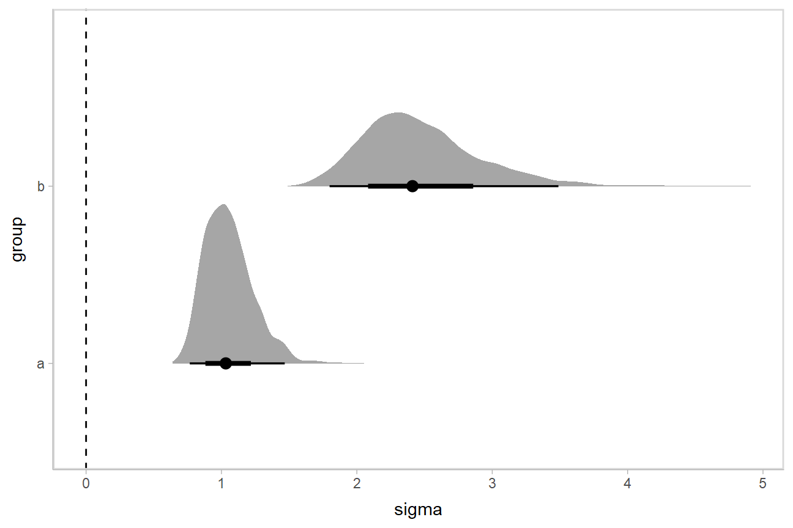
By setting dpar = TRUE, all distributional parameters are added as additional columns in the result of add_fitted_draws; if you only want a specific parameter, you can specify it (or a list of just the parameters you want). In the above model, dpar = TRUE is equivalent to dpar = list("mu", "sigma").
Comparing levels of a factor
If we wish compare the means from each condition, compare_levels facilitates comparisons of the value of some variable across levels of a factor. By default it computes all pairwise differences.
Let’s demonstrate compare_levels with another plotting geom, stat_halfeyeh, which gives horizontal “half-eye” plots, combining intervals with a density plot:
#N.B. the syntax for compare_levels is experimental and may change
m %>%
spread_draws(r_condition[condition,]) %>%
compare_levels(r_condition, by = condition) %>%
ggplot(aes(y = condition, x = r_condition)) +
stat_halfeyeh()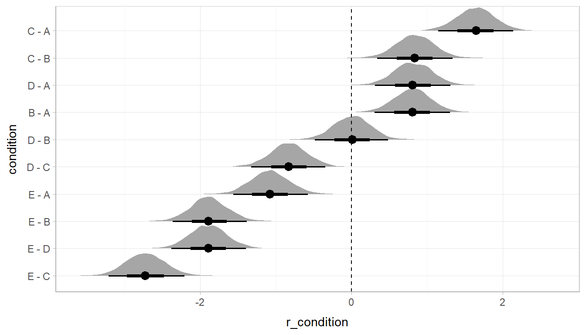
If you prefer “caterpillar” plots, ordered by something like the mean of the difference, you can reorder the factor before plotting:
#N.B. the syntax for compare_levels is experimental and may change
m %>%
spread_draws(r_condition[condition,]) %>%
compare_levels(r_condition, by = condition) %>%
ungroup() %>%
mutate(condition = reorder(condition, r_condition)) %>%
ggplot(aes(y = condition, x = r_condition)) +
stat_halfeyeh() +
geom_vline(xintercept = 0, linetype = "dashed") 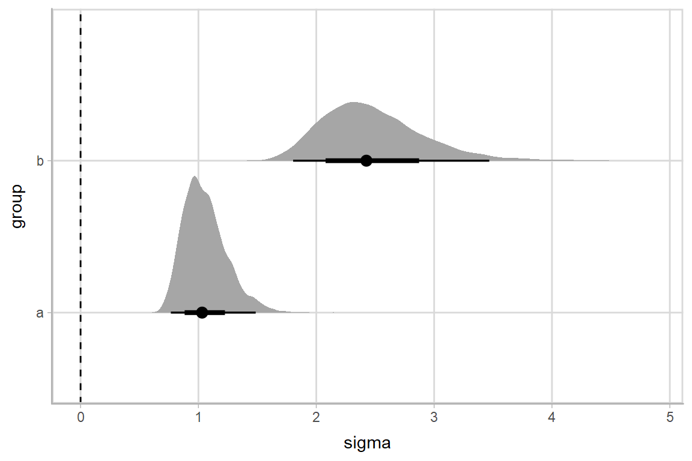
Ordinal models
The brms::fitted.brmsfit function for ordinal and multinomial regression models in brms returns multiple variables for each draw: one for each outcome category (in contrast to rstanarm::stan_polr models, which return draws from the latent linear predictor). The philosophy of tidybayes is to tidy whatever format is output by a model, so in keeping with that philosophy, when applied to ordinal and multinomial brms models, add_fitted_draws adds an additional column called .category and a separate row containing the variable for each category is output for every draw and predictor.
Ordinal model with continuous predictor
We’ll fit a model using the mtcars dataset that predicts the number of cylinders in a car given the car’s mileage (in miles per gallon). While this is a little backwards causality-wise (presumably the number of cylinders causes the mileage, if anything), that does not mean this is not a fine prediction task (I could probably tell someone who knows something about cars the MPG of a car and they could do reasonably well at guessing the number of cylinders in the engine).
Before we fit the model, let’s clean the dataset by making the cyl column an ordered factor (by default it is just a number):
## mpg cyl disp hp drat wt qsec vs am gear carb
## 1 21.0 6 160 110 3.90 2.620 16.46 0 1 4 4
## 2 21.0 6 160 110 3.90 2.875 17.02 0 1 4 4
## 3 22.8 4 108 93 3.85 2.320 18.61 1 1 4 1
## 4 21.4 6 258 110 3.08 3.215 19.44 1 0 3 1
## 5 18.7 8 360 175 3.15 3.440 17.02 0 0 3 2
## 6 18.1 6 225 105 2.76 3.460 20.22 1 0 3 1Then we’ll fit an ordinal regression model:
## Compiling the C++ model## Start samplingadd_fitted_draws will include a .category column, and .value will contain draws from the posterior distribution for the probability that the response is in that category. For example, here is the fit for the first row in the dataset:
## # A tibble: 3 x 9
## # Groups: mpg, .row [1]
## mpg .row .category .value .lower .upper .width .point .interval
## <dbl> <int> <fct> <dbl> <dbl> <dbl> <dbl> <chr> <chr>
## 1 21 1 1 0.274 0.0531 0.675 0.95 median qi
## 2 21 1 2 0.711 0.318 0.944 0.95 median qi
## 3 21 1 3 0.00325 0.0000140 0.0837 0.95 median qiNote how the .category variable does not retain the original factor level names. This is due to a bug in brms 2.11 (see here). As a workaround, we can recover the original factor labels and assign the result to a cyl column:
tibble(mpg = 21) %>%
add_fitted_draws(m_cyl) %>%
# recover original factor labels
mutate(cyl = levels(mtcars_clean$cyl)[.category]) %>%
group_by(cyl, add = TRUE) %>%
median_qi(.value)## # A tibble: 3 x 10
## # Groups: mpg, .row, .category [3]
## mpg .row .category cyl .value .lower .upper .width .point .interval
## <dbl> <int> <fct> <chr> <dbl> <dbl> <dbl> <dbl> <chr> <chr>
## 1 21 1 1 4 0.274 0.0531 0.675 0.95 median qi
## 2 21 1 2 6 0.711 0.318 0.944 0.95 median qi
## 3 21 1 3 8 0.00325 0.0000140 0.0837 0.95 median qiWe could plot fit lines for fitted probabilities against the dataset:
data_plot = mtcars_clean %>%
ggplot(aes(x = mpg, y = cyl, color = cyl)) +
geom_point() +
scale_color_brewer(palette = "Dark2", name = "cyl")
fit_plot = mtcars_clean %>%
data_grid(mpg = seq_range(mpg, n = 101)) %>%
add_fitted_draws(m_cyl, value = "P(cyl | mpg)") %>%
# recover original factor labels
mutate(cyl = levels(mtcars_clean$cyl)[.category]) %>%
ggplot(aes(x = mpg, y = `P(cyl | mpg)`, color = cyl)) +
stat_lineribbon(aes(fill = cyl), alpha = 1/5) +
scale_color_brewer(palette = "Dark2") +
scale_fill_brewer(palette = "Dark2")
plot_grid(ncol = 1, align = "v",
data_plot,
fit_plot
)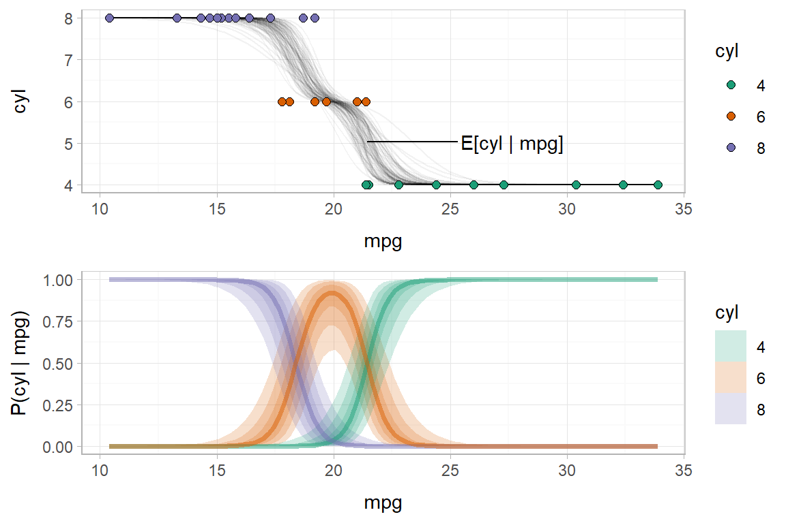
The above display does not let you see the correlation between P(cyl|mpg) for different values of cyl at a particular value of mpg. For example, in the portion of the posterior where P(cyl = 6|mpg = 20) is high, P(cyl = 4|mpg = 20) and P(cyl = 8|mpg = 20) must be low (since these must add up to 1).
One way to see this correlation might be to employ hypothetical outcome plots (HOPs) just for the fit line, “detaching” it from the ribbon (another alternative would be to use HOPs on top of line ensembles, as demonstrated earlier in this document). By employing animation, you can see how the lines move in tandem or opposition to each other, revealing some patterns in how they are correlated:
ndraws = 50
p = mtcars_clean %>%
data_grid(mpg = seq_range(mpg, n = 101)) %>%
add_fitted_draws(m_cyl, value = "P(cyl | mpg)") %>%
# recover original factor labels
mutate(cyl = levels(mtcars_clean$cyl)[.category]) %>%
ggplot(aes(x = mpg, y = `P(cyl | mpg)`, color = cyl)) +
# we remove the `.draw` column from the data for stat_lineribbon so that the same ribbons
# are drawn on every frame (since we use .draw to determine the transitions below)
stat_lineribbon(aes(fill = cyl), alpha = 1/5, color = NA, data = . %>% select(-.draw)) +
# we use sample_draws to subsample at the level of geom_line (rather than for the full dataset
# as in previous HOPs examples) because we need the full set of draws for stat_lineribbon above
geom_line(aes(group = paste(.draw, cyl)), size = 1, data = . %>% sample_draws(ndraws)) +
scale_color_brewer(palette = "Dark2") +
scale_fill_brewer(palette = "Dark2") +
transition_manual(.draw)
animate(p, nframes = ndraws, fps = 2.5, width = 576, height = 192, res = 96, dev = "png", type = "cairo")
Notice how the lines move together, and how they move up or down together or in opposition. We could take a slice through these lines at an x position in the above chart (say, mpg = 20) and look at the correlation between them using a scatterplot matrix:
tibble(mpg = 20) %>%
add_fitted_draws(m_cyl, value = "P(cyl | mpg = 20)") %>%
# recover original factor labels
mutate(cyl = levels(mtcars_clean$cyl)[.category]) %>%
ungroup() %>%
select(.draw, cyl, `P(cyl | mpg = 20)`) %>%
gather_pairs(cyl, `P(cyl | mpg = 20)`, triangle = "both") %>%
filter(.row != .col) %>%
ggplot(aes(.x, .y)) +
geom_point(alpha = 1/50) +
facet_grid(.row ~ .col) +
ylab("P(cyl = row | mpg = 20)") +
xlab("P(cyl = col | mpg = 20)")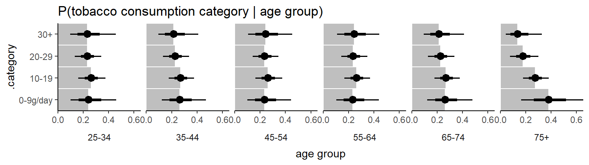
While talking about the mean for an ordinal distribution often does not make sense, in this particular case one could argue that the expected number of cylinders for a car given its miles per gallon is a meaningful quantity. We could plot the posterior distribution for the average number of cylinders for a car given a particular miles per gallon as follows:
\[
\textrm{E}[\textrm{cyl}|\textrm{mpg}=m] = \sum_{c \in \{4,6,8\}} c\cdot \textrm{P}(\textrm{cyl}=c|\textrm{mpg}=m)
\] We can use the above formula to derive a posterior distribution for \(\textrm{E}[\textrm{cyl}|\textrm{mpg}=m]\) from the model. The model gives us a posterior distribution for \(\textrm{P}(\textrm{cyl}=c|\textrm{mpg}=m)\): when mpg = \(m\), the response-scale linear predictor (the .value column from add_fitted_draws) for cyl (aka .category) = \(c\) is \(\textrm{P}(\textrm{cyl}=c|\textrm{mpg}=m)\). Thus, we can group within .draw and then use summarise to calculate the expected value:
label_data_function = . %>%
ungroup() %>%
filter(mpg == quantile(mpg, .47)) %>%
summarise_if(is.numeric, mean)
data_plot_with_mean = mtcars_clean %>%
data_grid(mpg = seq_range(mpg, n = 101)) %>%
add_fitted_draws(m_cyl, value = "P(cyl | mpg)", n = 100) %>%
# recover original factor labels (and convert into numbers)
mutate(cyl = as.numeric(levels(mtcars_clean$cyl)[.category])) %>%
group_by(mpg, .draw) %>%
# calculate expected cylinder value
summarise(cyl = sum(cyl * `P(cyl | mpg)`)) %>%
ggplot(aes(x = mpg, y = cyl)) +
geom_line(aes(group = .draw), alpha = 5/100) +
geom_point(aes(y = as.numeric(as.character(cyl)), fill = cyl), data = mtcars_clean, shape = 21, size = 2) +
geom_text(aes(x = mpg + 4), label = "E[cyl | mpg]", data = label_data_function, hjust = 0) +
geom_segment(aes(yend = cyl, xend = mpg + 3.9), data = label_data_function) +
scale_fill_brewer(palette = "Set2", name = "cyl")
plot_grid(ncol = 1, align = "v",
data_plot_with_mean,
fit_plot
)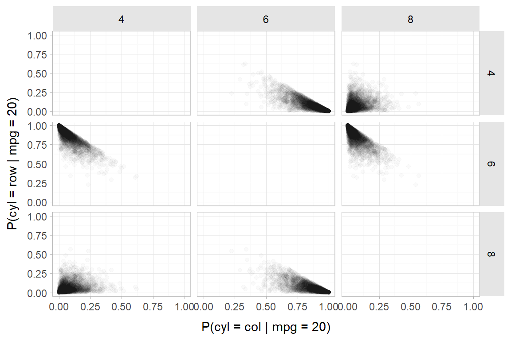
Now let’s do some posterior predictive checking: do posterior predictions look like the data? For this, we’ll make new predictions at the same values of mpg as were present in the original dataset (gray circles) and plot these with the observed data (colored circles):
mtcars_clean %>%
# we use `select` instead of `data_grid` here because we want to make posterior predictions
# for exactly the same set of observations we have in the original data
select(mpg) %>%
add_predicted_draws(m_cyl, seed = 1234) %>%
# recover original factor labels
mutate(cyl = levels(mtcars_clean$cyl)[.prediction]) %>%
ggplot(aes(x = mpg, y = cyl)) +
geom_count(color = "gray75") +
geom_point(aes(fill = cyl), data = mtcars_clean, shape = 21, size = 2) +
scale_fill_brewer(palette = "Dark2") +
geom_label_repel(
data = . %>% ungroup() %>% filter(cyl == "8") %>% filter(mpg == max(mpg)) %>% dplyr::slice(1),
label = "posterior predictions", xlim = c(26, NA), ylim = c(NA, 2.8), point.padding = 0.3,
label.size = NA, color = "gray50", segment.color = "gray75"
) +
geom_label_repel(
data = mtcars_clean %>% filter(cyl == "6") %>% filter(mpg == max(mpg)) %>% dplyr::slice(1),
label = "observed data", xlim = c(26, NA), ylim = c(2.2, NA), point.padding = 0.2,
label.size = NA, segment.color = "gray35"
)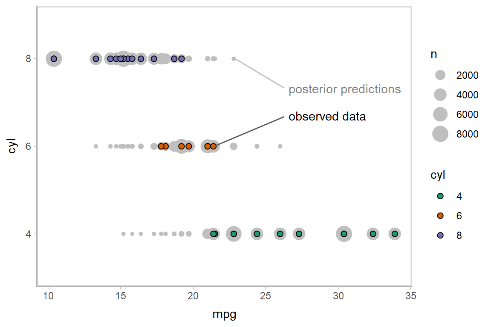
This looks pretty good. Let’s check using another typical posterior predictive checking plot: many simulated distributions of the response (cyl) against the observed distribution of the response. For a continuous response variable this is usually done with a density plot; here, we’ll plot the number of posterior predictions in each bin as a line plot, since the response variable is discrete:
mtcars_clean %>%
select(mpg) %>%
add_predicted_draws(m_cyl, n = 100, seed = 12345) %>%
# recover original factor labels
mutate(cyl = levels(mtcars_clean$cyl)[.prediction]) %>%
ggplot(aes(x = cyl)) +
stat_count(aes(group = NA), geom = "line", data = mtcars_clean, color = "red", size = 3, alpha = .5) +
stat_count(aes(group = .draw), geom = "line", position = "identity", alpha = .05) +
geom_label(data = data.frame(cyl = "4"), y = 9.5, label = "posterior\npredictions",
hjust = 1, color = "gray50", lineheight = 1, label.size = NA) +
geom_label(data = data.frame(cyl = "8"), y = 14, label = "observed data",
hjust = 0, color = "red", label.size = NA)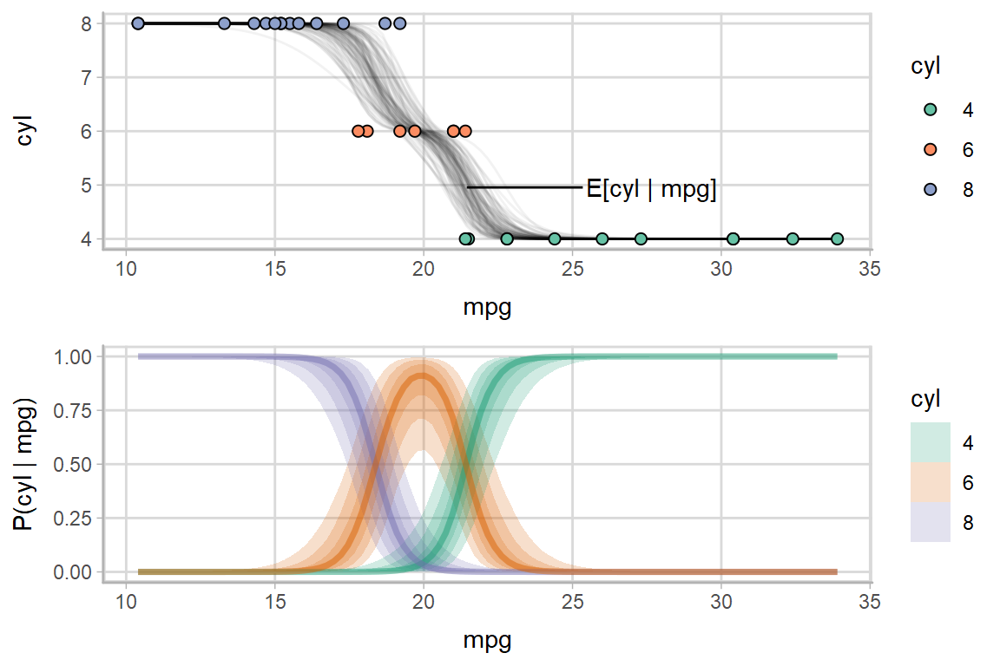
This also looks good.
Another way to look at these posterior predictions might be as a scatterplot matrix. tidybayes::gather_pairs makes it easy to generate long-format data frames suitable for creating custom scatterplot matrices (or really, arbitrary matrix-style small multiples plots) in ggplot using facet_grid:
set.seed(12345)
mtcars_clean %>%
select(mpg) %>%
add_predicted_draws(m_cyl) %>%
# recover original factor labels. Must ungroup first so that the
# factor is created in the same way in all groups; this is a workaround
# because brms no longer returns labelled predictions (hopefully that
# is fixed then this will no longer be necessary)
ungroup() %>%
mutate(cyl = factor(levels(mtcars_clean$cyl)[.prediction])) %>%
# need .drop = FALSE to ensure 0 counts are not dropped
group_by(.draw, .drop = FALSE) %>%
count(cyl) %>%
gather_pairs(cyl, n) %>%
ggplot(aes(.x, .y)) +
geom_count(color = "gray75") +
geom_point(data = mtcars_clean %>% count(cyl) %>% gather_pairs(cyl, n), color = "red") +
facet_grid(vars(.row), vars(.col)) +
xlab("Number of observations with cyl = col") +
ylab("Number of observations with cyl = row") Ordinal model with categorical predictor
Here’s an ordinal model with a categorical predictor:
## Compiling the C++ model## recompiling to avoid crashing R session## Start samplingThen we can plot predicted probabilities for each outcome category within each level of the predictor:
esoph %>%
data_grid(agegp) %>%
add_fitted_draws(m_esoph_brm, dpar = TRUE) %>%
mutate(tobgp = levels(esoph$tobgp)[.category]) %>%
ggplot(aes(x = agegp, y = .value, color = tobgp)) +
stat_pointinterval(position = position_dodge(width = .4)) +
scale_size_continuous(guide = FALSE) +
scale_color_manual(values = brewer.pal(6, "Blues")[-c(1,2)])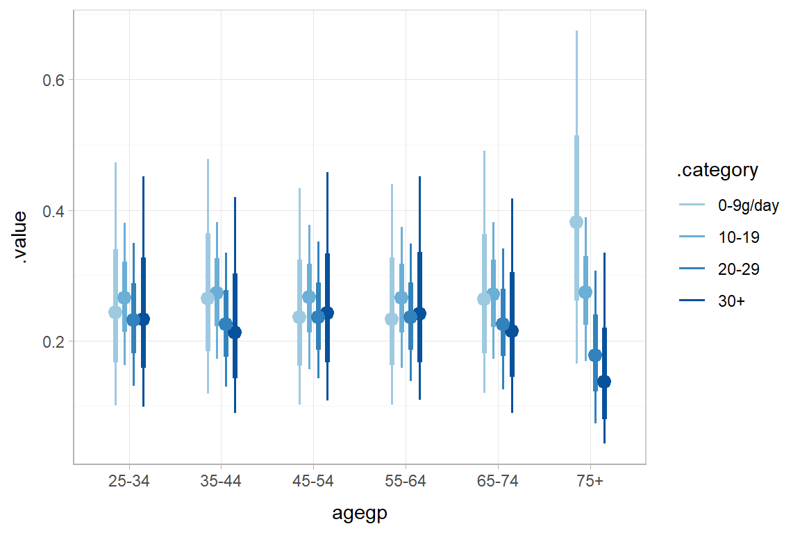
It is hard to see the changes in categories in the above plot; let’s try something that gives a better gist of the distribution within each year:
esoph_plot = esoph %>%
data_grid(agegp) %>%
add_fitted_draws(m_esoph_brm) %>%
mutate(tobgp = levels(esoph$tobgp)[.category]) %>%
ggplot(aes(x = .value, y = tobgp)) +
coord_cartesian(expand = FALSE) +
facet_grid(. ~ agegp, switch = "x") +
theme_classic() +
theme(strip.background = element_blank(), strip.placement = "outside") +
ggtitle("P(tobacco consumption category | age group)") +
xlab("age group")
esoph_plot +
stat_summaryh(fun.x = median, geom = "barh", fill = "gray75", width = 1, color = "white") +
stat_pointintervalh()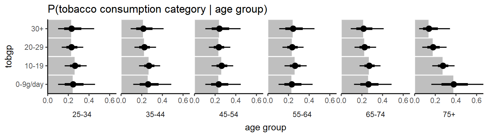
The bars in this case might present a false sense of precision, so we could also try CCDF barplots instead:
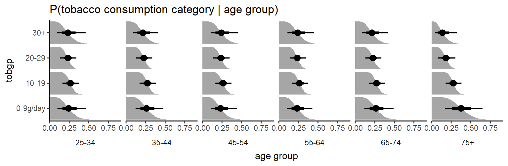
This output should be very similar to the output from the corresponding m_esoph_rs model in vignette("tidy-rstanarm") (modulo different priors), though brms does more of the work for us to produce it than rstanarm does.